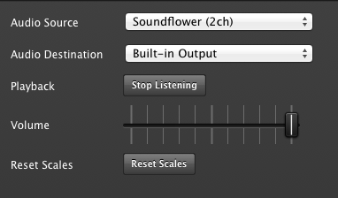

So you wanna play with the Pixel Pusher? Awesome, because we wanna make it easy for you ♥.
This guide will walk you through setting up the Pixel Pusher software on your Mac so you can start writing your own animations.
You're going to need to be running Mountain Lion (10.8 or newer). You can check which version you're running by clicking the Apple icon and clicking "About this Mac".
Download the latest version of the Pixel Pusher software here:
http://pixelheart.dj/downloads/PixelPusher.zip
Once it's downloaded, unzip it and you'll find two files: PixelPusher.app and
Soundflower-1.6.6b.dmg.
Soundflower is a tool that allows you to redirect audio on your computer through a piece of software such as the Pixel Pusher. The Pixel Pusher then redirects this audio back to your speakers, allowing the Pixel Pusher to react to the music being played on your computer.
Double click the Soundflower-1.6.6b.dmg file to expose the installer and then double click
Soundflower.pkg to start the installer.
The installation is fairly straightforward and will require you to restart your computer once it's finished.
With Soundflower installed, you can now redirect your computer's music through it.
Start by opening the System Preferences and selecting the Sound preference page.
Select the "Output" tab if it isn't already selected.
Select either "Internal Speakers" or "Headphones", depending on whether you have headphones plugged in, and make sure that you turn the volume all the way up.
You have to turn the volume all the way up so that we don't lose any information between the sound source and your speakers. You'll be able to use the Pixel Pusher to control your system's volume.
With the volume turned to max, you can now select "Soundflower (2ch)" as the output.
Now that your audio is being routed to the Soundflower you won't hear any audio come out of your speakers until you run a program that redirects the Soundflower to your speakers again. Thankfully the Pixel Pusher does exactly this.
Run the Pixel Pusher app and press the "Prefs" button in the top right.
Before you change the audio source and destination, tell the Pixel Pusher to stop listening by clicking the "Stop Listening" button.
Change the Pixel Pusher's Audio Source to be "Soundflower (2ch)" and the Audio Destination to be "Built-in Output".

You can now tell the Pixel Pusher to start listening to the audio again. If you're playing music you should now hear it coming out of your speakers and see the audio processing graphs displaying useful information.
You now have everything set up to start playing with the Pixel Pusher!
I don't hear any audio coming out of my speakers?
Sometimes you may have to tap the Pixel Pusher's listening button once or twice to get it to listen properly. This generally only happens when the Pixel Pusher starts running.
I hear my music but it sounds really quiet, even though my volume is turned all the way up.
Go to your System Preferences Audio page again and select "Internal Speakers" or "Headphones" and make sure that the volume is maxed out. Don't forget to switch the output source back to "Soundflower (2ch)" after you do this!
Learn about the Pixel Pusher User Interface.